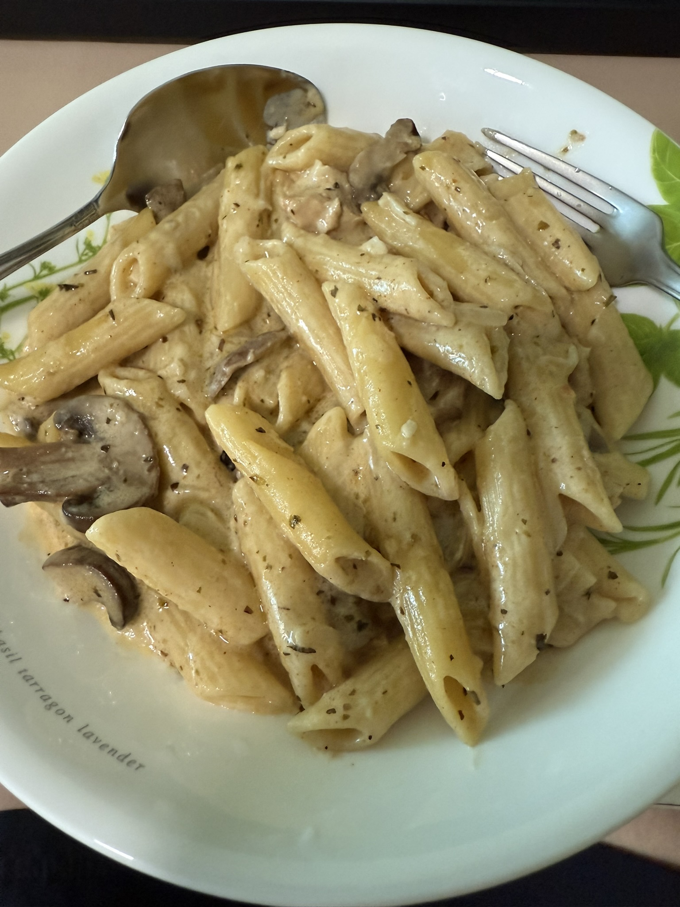

Home
Chicken Alfredo Pasta

Description
This recipe came from a TikTok video done by @hazwanramli. I have made this pasta countless of times and it is my favourite pasta to make for my family.
It is pretty simple to make and it can be adjusted accordingly for people with different spice tolerance.
Ingredients
For 500g of pasta (preferrably I use Penne but you can use whatever pasta you like)
Chicken Seasoning
I use around 400g of chicken breast, cut into bite-sized pieces
- 1 tablespoon garlic powder
- 1 tablespoon oregano
- 1 tablespoon black pepper
- 1 tablespoon cayenne pepper (optional for low spice tolerance)
- 4 tablespoons olive oil
- 2 pinches of salt
Pasta Sauce
- 100g butter
- 12 cloves garlic, sliced thinly
- 2 holland onion, diced
- 200g swiss brown mushroom, sliced
- ⅓ teaspoon salt
- 2 ½ tablespoons oregano
- 2 ½ tablespoons cayenne pepper (optional for low spice tolerance)
- 400ml cooking cream
- 2 chicken stock cubes
- 1 ¼ cups pasta water
- 4 tablespoons grated parmesan cheese
- 2 ½ dry parsley (for garnish)
Steps
- In a bowl, season the chicken with the garlic powder, oregano, black pepper, cayenne pepper, olive oil and salt.
- Leave the chicken to marinade for 10 minutes.
- Boil the pasta, and save 1 ¼ cups of the boiled pasta water.
- Stir fry the chicken in a pan with a little bit of olive oil for 7 to 8 minutes. Set aside after cooking.
- Using the same pan, add the butter, onion, garlic, and mushroom. Let it cook until the onion turns translucent.
- Add in the salt, cayenne pepper, oregano, and cooking cream. Stir until incorporated.
- Add in the chicken stock cube and pasta water, and stir.
- Add in the cooked chicken, pasta and cheese, and stir.
- When the pasta has thickened, add in the dry parsley.
- Serve and enjoy!